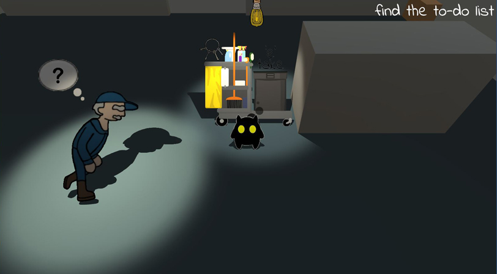
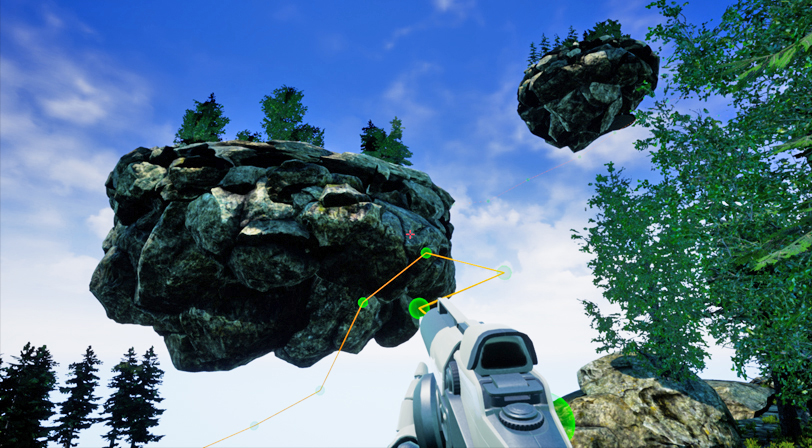
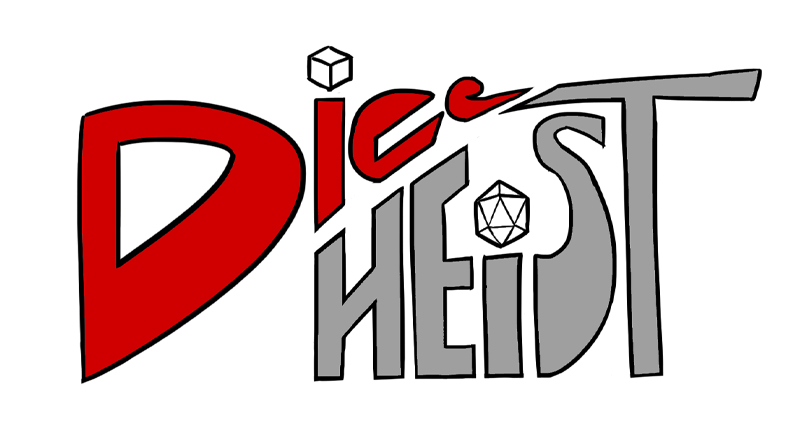
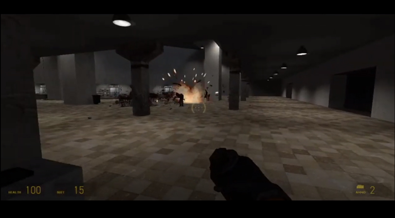

Class projects I made while I was enrolled at Rochester Institute of Technology 2016 - 2020.
It's comprised of video games, board games, level designs, and 3d models.
School Projects

Stellar Standoff
2D pass and play Unity group project coded in C#. I coded
the camera movement. I also did most of the artwork.

Night Shift
2D/3D Unity group project coded in C#. I coded the rumble interactables and some of the movement.
I also made the design doc and did some of the art.

UE4 Environment (Bioshockish)
An environment I made in Unreal Engine 4 using free assets. I made a skyrail system between floating islands and collectable crystals using Blueprints.
I have shifting LODs and asset loading to improve performance.

Snowbound
A board game I developed with two others that we showcased at Imagine RIT.
We made a polished looking version using Game Crafter's sevices. In addition to development and playtesting, I did the majority of the art.

{kind=link}
Dice Heist
A board game that was a semester-long group project of which I was the Team Lead.
In addtion to coming up with the concept, I designed, playtested, and drew art.

Eldritch Archive
A board game group project based on the Cthulhu lore written by H. P. Lovecraft.
I designed, playtested, and did the board art. I also worked on the design doc.

Half Life 2 Level
A level I made in Half Life 2 using Valve's Hammer editor. PDF of my design layout and a video playthrough of my level with commentary.

Portal 2 Level
A level I made in Portal 2's custom level editor. PDF of my design layout and a video playthrough of my level with commentary.

Battle Block Theater Level
A level I made in Battle Block Theater's custom level editor. PDF of my design layout and a video playthrough of my level with commentary.

Silver Bullet Investigations
For a group project to make a scene, we made a 1940's P.I. office.
In Maya I modeled and textured 4 different props for the scene: Colt Detective Special gun, desk lamp, plant, and waste bin.